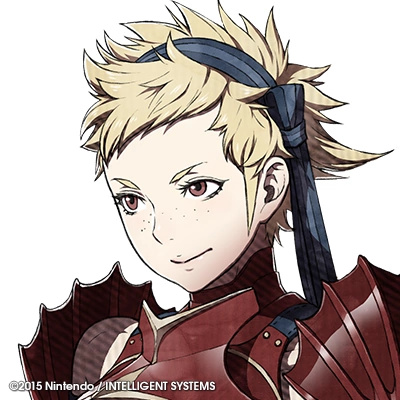

Remaining Rolecards:
Marcus_Doodalee wins the game!
Summary

Elise
“See, watch this! KAPOW! My killer left hook! KABOOM! My right fist of fury!”
You are Elise, the youngest royal of Nohr, and a powerful staff wielder. Sweet and innocent, the entirity of Nohr would fight for you until the end. Your skill with the stave is such that you can be none other than the Alternating Doctor.
On even numbered Nights, you may target a player, protecting them from any deaths that happen during the day.
On odd numbered Nights, you may target a player, protecting them from any deaths that happen during the night.
You cannot target yourself with either of these abilities
You win when all threats to the Town have been eliminated.
Tw1light wins the game!
Summary
Peri
“All the ones who made me cry! They’re dead meat!”
You are Prince Xander’s retainer, Peri, and the lovely daughter of a Nohrian noble… until you get into battle. There, you’re a sadistic, demonically driven death on horseback… and though frail, you always go down fighting… You are a Deathmarker.
Each night, you may place a mark of death upon a player. If a player has two marks of death played upon them in one night they will die through all immunity. As such, you are not the only deathmarker.
You win when all threats to the Town have been eliminated.
Simon wins the game!
Summary
Beruka
“I’ll kill them all. For Lady Camilla.”
You are Beruka, Camilla’s retainer and a Nohrian assassin. Being an expert wyvern rider, you fly with Camilla to kill her enemies as they stand. You are a Deathmarker
Each night, you may place a mark of death upon a player. If a player has two marks of death played upon them in one night they will die through all immunity. As such, you are not the only deathmarker.
You win when all threats to the Town have been eliminated.
GamerPoke wins the game!
Summary

Ryoma
“Meeting on the battlefield—you weren’t expecting a warm welcome, were you? I won’t hold back, regardless of who I am facing. If you wish to beg for your life, now would be a very good time.”
You are Ryoma, crown prince of Hoshido and strongest warrior of the same. A strong sense of honour and protection motivate you to fight for Hoshido and your family. You are thus a Battle Defender
Once per day, during ITAs, you may quote a player’s post and reply with: “For the honor of Hoshdio!”. The shot will be redirected to you, and will hit and miss based on that. Every time you do this, you gain +10% ITA accuracy for the next day onwards.
You win when all threats to the Town have been eliminated.
Livicus wins the game!
Summary

Azura
“Sing with me a song of silence and blood
The rain falls but can’t wash away the mud
Within my ancient heart dwells madness and pride.
Can no one hear my cry?”
You are Azura, a Nohrian princess kidnapped and raised in Hoshido, as the other end of the hostage situation with Corrin. You were taught a prophetic song from birth and grew to be a magnificent songstress, whoose singing and dancing could inspire an army to fight to the death, so what could you be but the ITA Dancer
Your ITA shots will always miss. However, each day you may privately target a player who has already shot today, giving them an extra ITA shot usable during ITA phases.
You will appear to be Nohrian.
You win when all threats to the Town have been eliminated.
Luxy wins the game!
Summary
Leo
“I hope you like the dark. I’m about to drown you in it…”
You are Prince Leo of Nohr, and the family’s resident master of magic. Pragmatic and logical, you are an expert at combat, and so you are the Tacitcal Investigator
Each night you may target a player. If that player is Nohrian, you will learn if that player is capable of killing during the night, and if that player is Hoshidian, you will learn if that player is able to use ITAs more effectively.
You win when all threats to the Town have been eliminated.
Firekitten wins the game!
Summary
Camilla
“Aww, I can’t stand to see you upset like this. Come over here, and I’ll just put you to sleep for a little while. I won’t hurt you! I just need you to stay calm while I kill these fiends…”
You are Camilla, elder princess of Nohr and a malig knight. Neglected by both your parents as birth, you found solace when Corrin was brought to Nohr from Hoshido. Now, you are the Corrin Obsesser, fighting fiercly for Corrin… whether they like it or not.
Each night you may target a player, learning if they have the flavor of Corrin.
Once you have found Corrin, you will have a default ITA accuracy of 30% from then on.
You win when all threats to the town have been eliminated.
Shurian wins the game!
Summary

Odin
“MY ACHING BLOOD!!!”
You are Odin, a traveller from another world and a needlessly overdramatifc dark mage. With the power of your TOME OF THE SACRED STONES and the INCANTATION OF THE RADIANT DAWN or whatever it is you call your 5-might Fire tomes, you will make all fear the name ODIN DARK! You are an Innefectual Poser.
During the day, you may say things in BOLD PURPLE TEXT and I will assume that you are ‘casting a spell’. I will announce that this spell has worked, but all it will do is send a nonsensical notifaction (along with the knowledge that nothing happened) to a person named in the spell. (because Odin is a bad mage lol)
Haaaaave fun with that.
You win when all threats to the town have been eliminated.
Blizer wins the game!
Summary
Hana
"As Lady Sakura’s lead retainer, it will be my pleasure to take your orders.”
You are Hana, Princess Sakura’s lead retainer and a fierce samurai with a fiercer temper. Even if you sometimes cannot control your emotions, your blade always strikes true. You are the Last-Ditch Suicide Bomber
After ITAs have finished for the rest of the game (due to too few players), you will gain the following ability:
During the thread you may post FEARSOME BLOW: [player] in bold red text. This will kill both you and that player. Your death cannot be prevented, however your target may be protected from deaths during the day. You may only target players classified as Nohrian with this ability.
You win when all threats to the town have been eliminated.
Insanity wins the game!
Summary
Jakob
““I only have one standard of judgement. There are those that side with Lord/Lady Corrin, and everyone else.””
You are Jakob, butler to Corrin since their childhood nd possibly their most loyal servant. Your capability to serve and compulsively help everyone who sides with Corrin, you have to be the Nohrian Butler.
On the first three nights you may target another Nohrian, learning if they used any Kill Power that night.
You win when all threats to the town have been eliminated.
Memesky wins the game!
Summary

Kaden
“I’m not an “it”, human! I have a name. A better name than yours, no doubt. Call me Kaden. I’m the chief of this village.”
You are Kaden, a Hoshidan Kitsune and the chief of your remote village. You are obligated to both protect your village from greedy humans and to repay any debts that those humans put you in, and are thus out in the world. Well, you didn’t expect this war to interfere, but sincce you owe a few debts to the Hoshidian royals, I suppose you have to fight with Hoshido! You are the Even Warrior.
Your ITA accuracy is 5% higher on Even-Numbered days.
You win when all threats to the town have been eliminated.
MaximusPrime wins the game!
Summary
Subaki
“I will defend this fort, as well as Lady Sakura’s honor!”
You are Subaki, a perfectionist Sky Knight and retainer to Lady Sakura of Hoshido. Your insecurities drive you to strive towards absoloute perfection in both the battlefield and in your everyday life, so what could you be but the Perfection Voyeur.
Each night, you may target a player, learning if that player was targeted by a negative effect, such as occupation, framing, and ITA debuffs. You may target yourself with this ability.
You win when all threats to the town have been eliminated.
Solic wins the game!
Summary
Setsuna
“You made it all the way up here… Surprising…”
You are Setsuna, a Hoshidian archer and retainer to Lady Hinoka of Hoshido. You often space out and have fallen into many traps because of it, but despite being incredibly lazy you are still an accurate yumi user. So… I guess you’re the ITA Sharpshooter
Your ITA shots have a default accuracy of 33% rather than 15%.
You win when all threats to the town have been eliminated.
CheesyKnives wins the game!
Summary

Scarlet
“I won’t let Nohr oppress my people any longer. For freedom!”
You are Scarlet, a revoloutionary dragon knight from Cheve who is fighting with Hoshido to stop the Nohrian oppression. Figthing to the bitter end, you are the ITA Strongwoman
Your ITA shots, if they hit, will always ill their target, however they fire at 10% accuracy rather than 15%.
You win when all threats to the town have been eliminated.
Sam17z wins the game!
Summary
Saizo
"Kotaro of Mokushu…you will now answer to me.
You are Saizo the Fifth, skilled Hoshidian ninja and retainer to Prince Ryoma of Hoshido. With your expertise in explosives and their offensive applications, you are the Backup Suicide Bomber.
Should another player with the ability Suicide Bomber, no matter what modifiers are placed upon the ability, die, you will gain the following ability:
During the day, you may say Pyrotechnics: [Player] in bold red text, causing you and that player to die. Nothing can prevent your death from this however the player who you target may be day immune.
You win when all threats to the town have been eliminated.
Margaret wins the game!
Summary
Hinata
“I’m gonna give this fight all I’ve got for Lord Takumi! Prepare yourself!”
You are Hinata, a Hoshidian samurai employed as the retainer to Lord Takumi of Hoshido. Young and inexperienced yet a master of the katana already, you can be none other than the ITA Retalliator.
Your ITA shots fire at +15% accuracy at any Nohrian who has shot you already in that ITA phase.
You win when all threats to the town have been eliminated.
PoisonedSquid wins the game!
Summary
Reina
“But this type of battle is like a playground to me. Oh, I wish you could have seen some of the work I did on the way here. The depth of agony was palpable. And the palette of violent reds…so vivid. Mmm…”
You are Reina, a Hoshidian Kinshi Knight who served Queen Mikoto while she was alive, and a fearsome force of nature with a sadistic obsession with the thrill of battle and the delights of death. Staring down your bow as you let loose a beautiful arrow through the hearts of your enemies, you can be none other than the 1-shot Vigilante.
Once per game, at night, you may kill a player.
You win when all threats to the town have been eliminated.